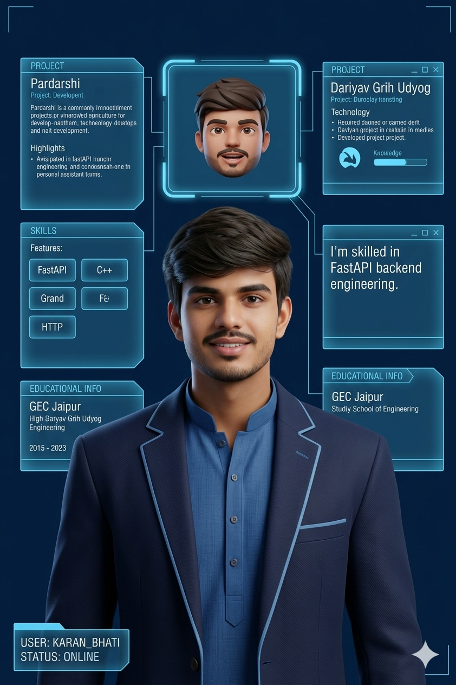

SYSTEM ONLINE
KARAN_BHATI
//AI_OS_V3
NEURAL LINK ACTIVE

Karan Bhati
AI Digital Twin
ACCESS: RESTRICTED
NEURAL LINK: ACTIVE
System initialized. Awaiting voice command...
Just now
Listening...
Initialize Voice Link
Initializing Neural Link...